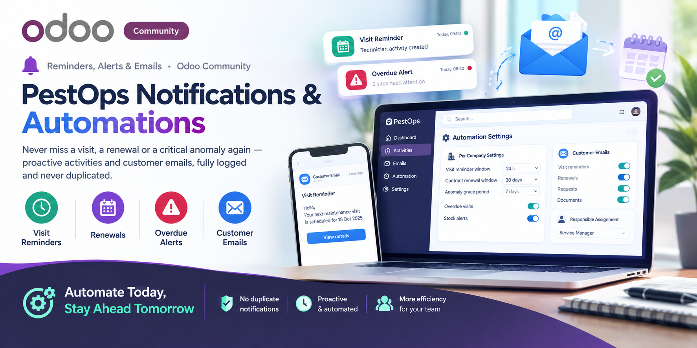
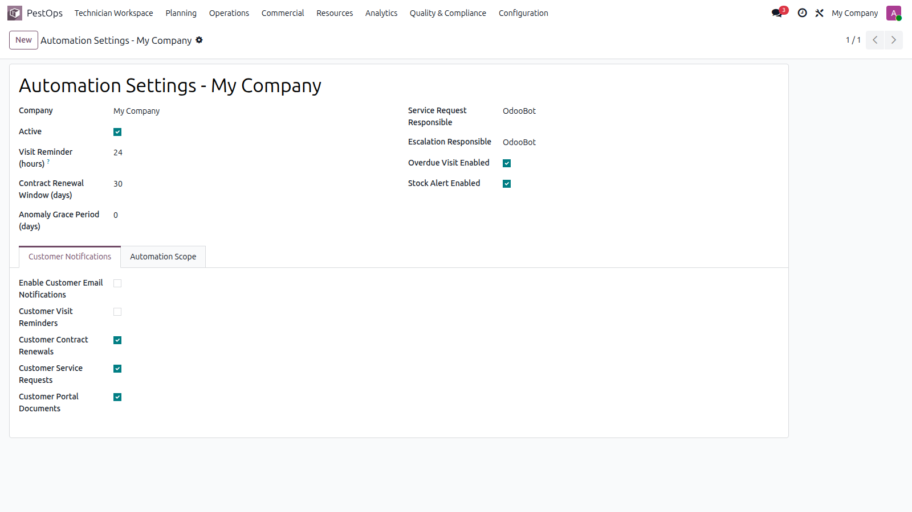
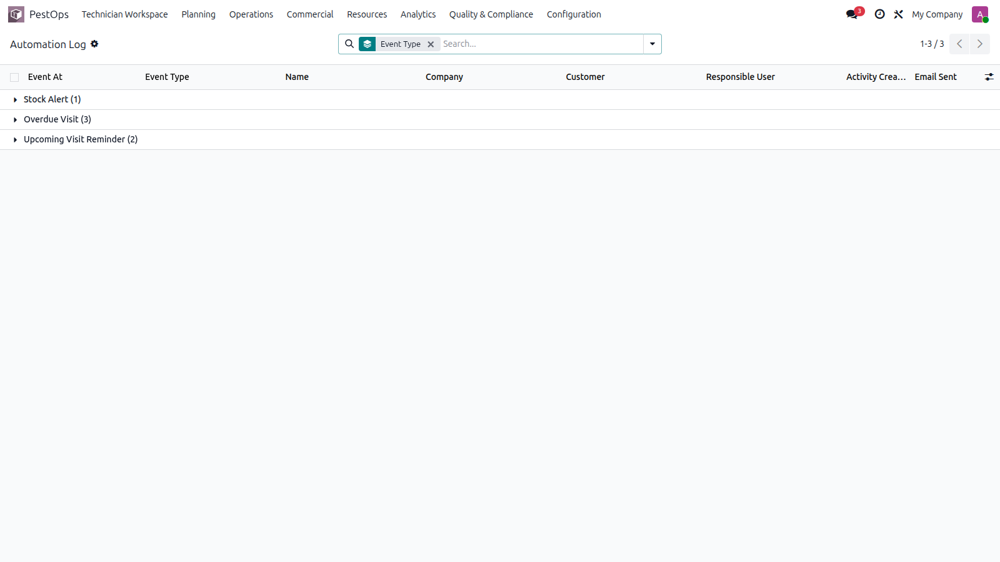

🔔 Reminders, Alerts & Emails · Odoo Community
⏰ Visit Reminders 📅 Renewals 🚨 Overdue Alerts 📧 Customer Emails


Automation settings per company.
Scheduled jobs watch every deadline in the system and tap the right person on the shoulder — inside Odoo as activities, outside as emails.
📞 No More Missed Visits 💸 No More Lapsed Contracts 🧹 No More Forgotten Callbacks
One settings record per company tunes everything: visit reminder window (hours), contract renewal window (days), anomaly grace period, overdue-visit and stock-alert toggles, plus per-family customer email switches and responsible assignment for requests and escalations.
Every automation run writes a structured event log with a unique key, linked record, responsible, and flags for email-sent / activity-created. The key makes repeats impossible — customers are never spammed twice for the same event — and managers can audit exactly what fired, when, for whom.

Event log with activities and emails sent.
| Odoo Version | Community |
|---|---|
| License | LGPL-3 |
| Module Type | Extension (requires PestOps Core) |
| Dependencies | pestops_core, pestops_stock, pestops_portal, mail |
| External Services | Mail server (only for customer emails) |
📧 imazighenapps@gmail.com — fast response 🔄 Free Updates